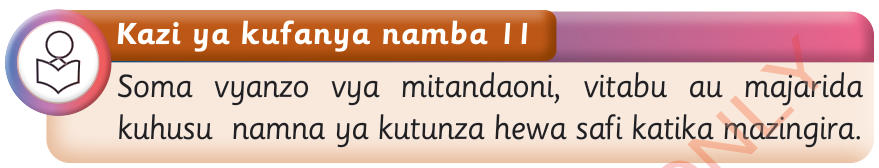

Vilevile, tutaepuka au kupunguza tatizo la kukauka kwa vyanzo vya maji, na uhaba wa maji.
Kutunza hewa safi katika mazingira yetu

Binadamu anahitaji hewa safi ili afya yake iweze kuimarika. Ni jukumu la kila mmoja kuhakikisha mazingira yanayomzunguka ni safi. Ili mazingira yawe na hewa safi, tunapaswa kudhibiti vyanzo vya uchafuzi wa hewa kama vile moshi kutoka viwandani, kwenye magari, na nyumbani. Pia, vumbi linalotokana na uchimbaji wa madini huchangia katika kuchafua hewa.
Mojawapo ya njia za kupunguza uchafuzi wa hewa ni kupanda miti kwa wingi ili kusaidia kupunguza hewaukaa. Hii ni kwa sababu miti hutoa hewa ya oksijeni na kuchukua hewaukaa ili kujitengenezea chakula. Aidha, tunapaswa kuzuia utupaji taka ovyo, kwani taka zinapooza hutoa harufu mbaya. Hivyo, tunapaswa kutunza mazingira yetu ili tupate hewa safi na kuboresha afya ya binadamu na viumbe wengine.